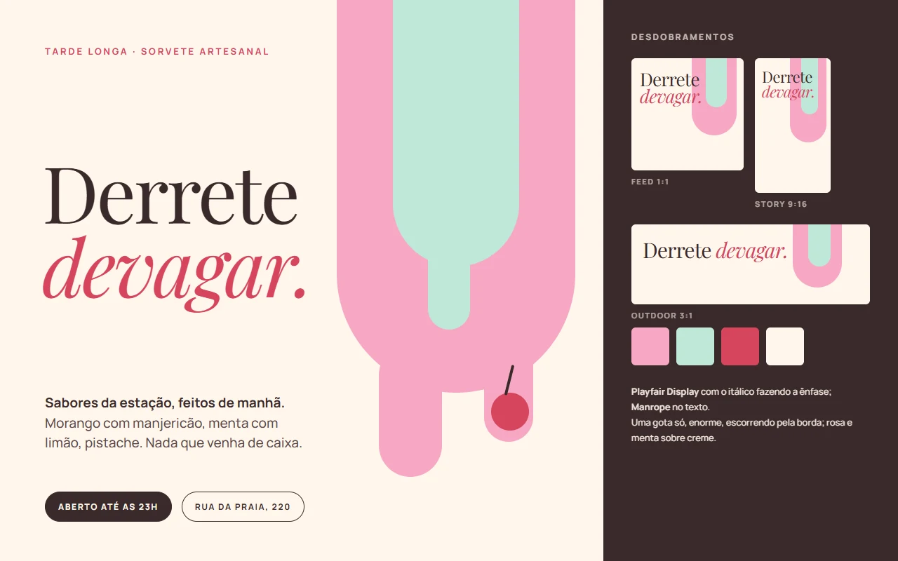
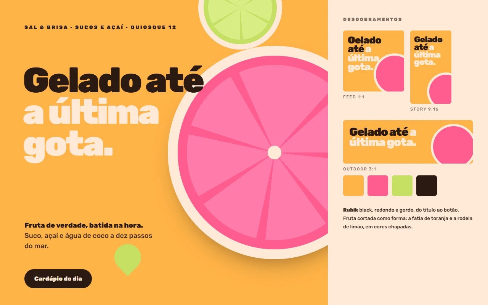
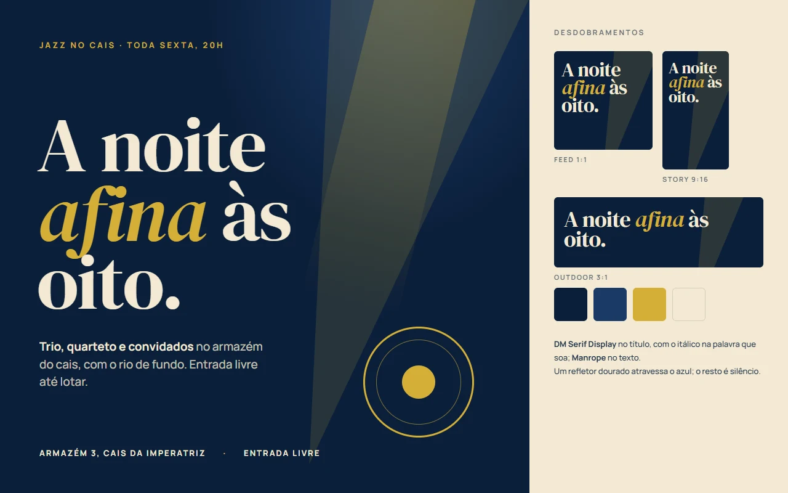
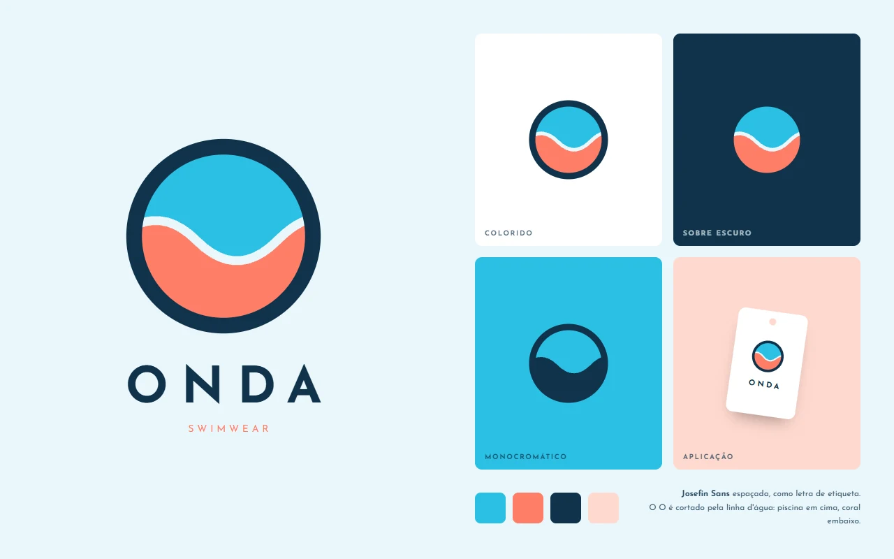

Trabalhos
Sites, sistemas, marcas e campanhas que a agência colocou no ar
Cada projeto com as telas, o que foi decidido e por quê. Clientes que autorizaram aparecem com nome e link para o site; os sistemas aparecem pelo problema e pela solução. Cada trabalho abre por dentro: as telas, as decisões e o que usamos.
-
1 / 6Início
Sobre
Site de imobiliária com busca por localização e objetivo, listagem de imóveis, simulação de financiamento e trabalhe conosco.
Seis páginas, três famílias tipográficas e nenhuma biblioteca de terceiro. O site carrega dois arquivos de script, e os dois são nossos — um deles é o próprio mapa de calor, instalado ali para a cliente saber o que acontece nas páginas dela.
O que usamos
- HTML, CSS e JavaScript à mão
- Zero biblioteca de terceiro
- Syne + Hanken Grotesk + Instrument Serif
- Mapa de calor próprio
- Sem etapa de build
- 6 páginas
-
1 / 6Início
Sobre
Site institucional de construtora, com uma página dedicada a cada empreendimento, o programa habitacional explicado numa página própria (no lugar de um PDF de 4 MB) e selo do programa no destaque.
Estático, sem etapa de compilação e sem plugin. É o que faz a página abrir rápido no celular de quem está procurando imóvel, e o que impede o site de quebrar sozinho quando um complemento de terceiro se atualiza.
O que usamos
- HTML, CSS e JavaScript à mão
- Zero biblioteca de terceiro
- Syncopate + Archivo
- Imagem em formato automático
- Sem etapa de build
- 11 páginas
-
1 / 4Início
Sobre
Associação sem fins lucrativos de orientação sobre cannabis medicinal. Site institucional com quem somos, conteúdo educativo, blog e a página para se associar.
Vinte e nove quilobytes de HTML e um script próprio; o resto que a página carrega é medição de campanha. Playfair Display nos títulos, o verde e o areia da identidade da associação, e nenhum gerenciador de conteúdo por trás: o que o visitante baixa é só a página.
O que usamos
- HTML, CSS e JavaScript à mão
- 1 script próprio
- Playfair Display
- 29 KB de HTML na home
- Sem etapa de build
- 6 páginas
-
1 / 4Catálogo
Sobre
Catálogo de moda feminina com busca, filtro por mais de vinte categorias e página de produto com variações de cor e composição do tecido. O preço aparece para quem entra na conta.
Roda numa plataforma de e-commerce em Next.js, com a marca no domínio próprio. Nem todo projeto começa do zero: aqui o trabalho acontece dentro da plataforma, com o catálogo, as fotos e as fichas da marca.
Em que roda
- Plataforma de e-commerce em Next.js
- 20+ categorias
- Preço mediante cadastro
- Fichas com composição
- Domínio próprio
-
1 / 4Início
Sobre
Empresa de tradução desde 1970: juramentada, técnica, livre e versão, com uma página por serviço, compliance, blog e pedido de orçamento, em português, inglês e espanhol.
Roda em WordPress com Elementor, a base que a empresa já usava, com os formulários ligados ao RD Station. Quando o cliente tem uma operação inteira em cima da ferramenta, o trabalho é fazer o site render dentro dela, não trocar o que funciona.
Em que roda
- WordPress + Elementor
- Formulários no RD Station
- 3 idiomas
- Uma página por serviço
- Blog
-
1 / 4Início
Sobre
Fotografia de gestante, parto e recém-nascido em Santos e São Paulo: portfólio por tipo de ensaio, serviços, blog, loja e cursos.
Roda na Alboom Pro, plataforma feita para fotógrafos, com a galeria em sete categorias, de chá revelação a festa. Um site de fotografia tem que vender sem roubar a cena das fotos: fundo branco, e o rosa da marca só nos botões e nos títulos.
Em que roda
- Plataforma Alboom Pro
- Portfólio em 7 categorias
- Loja e cursos
- Blog
- Pedido de orçamento
-
1 / 5Início
Sobre
Clínica médica de cannabis medicinal: jornada do paciente, especialidades, quem somos, blog e agendamento direto pelo WhatsApp.
Quinze quilobytes de HTML e um script só. Poppins, o verde da marca e páginas em HTML puro, sem gerenciador de conteúdo: abre rápido no celular e não tem o que quebrar sozinho.
O que usamos
- HTML, CSS e JavaScript à mão
- 1 script
- Poppins
- 15 KB de HTML na home
- Sem etapa de build
- Agendamento pelo WhatsApp
-
1 / 5Início
Sobre
Site de doceria artesanal: cardápio do dia, encomendas que caem direto no WhatsApp, a história da casa e o contato com mapa. Cinco telas desenhadas para vender bolo sem foto de banco: os doces são ilustrados, um a um.
Serifa quente e paleta de creme, rosa-queimado e cacau, tirada do próprio produto. O formulário de encomenda não pede pagamento: manda o pedido para a conversa, que é onde a doceira já atende.
O que usamos
- HTML, CSS e JavaScript à mão
- Cormorant Garamond + Manrope
- Doces ilustrados em vetor
- Pedido pelo WhatsApp
- Sem etapa de build
- 5 páginas
-
Sobre
Numa loja comum qualquer pessoa compra qualquer produto. Nesta, o que cada cliente pode comprar depende do documento médico dele, e vender errado custa a licença da operação.
Toda trava roda no servidor, e roda duas vezes: ao fechar o carrinho e de novo no pagamento. O preço nunca vem do navegador, o valor do pedido é reconstruído item por item, e a permissão é revalidada contra o estado de agora — não contra o retrato guardado na sessão.
Em números
- 163 módulos de backend
- 25 tabelas
- 1.200+ casos de teste
- Integração com CRM
- Dois meios de pagamento
- Reserva de estoque
-
Sobre
A autenticação aceitava o CPF como senha, o backend era chamado direto do navegador com a chave à vista, e o atendimento entrava na conta do cliente passando a senha dele na URL.
Trocar os três sem derrubar ninguém foi o trabalho de verdade, porque a base de clientes já existia e estava usando o sistema. Hoje o acesso de suporte é um código de uso único, válido por dois minutos, com alerta de auditoria a cada uso.
Em números
- 3 brechas fechadas
- 120s de validade do acesso
- 0 cliente trancado fora
- Trilha forense
- Conformidade LGPD
-
Sobre
Reescrever do zero é quase sempre a resposta errada quando tem faturamento passando pelo código. A separação foi feita movendo código sem alterar comportamento, aos poucos, com fronteira dura entre regra de negócio e serviço externo.
A loja continuou vendendo o tempo inteiro. Nenhuma parada programada.
Em números
- 3.914 linhas, antes
- 163 módulos, depois
- 0 parada programada
- Teste a cada envio de código
-
Sobre
Catálogo, funil, cores, tipografia e CRM próprios para cada marca, separadas pelo domínio. A segunda loja não é mantida à mão: ela é gerada a partir da primeira, e o teste reclama se alguém esquecer de regerar.
Em outro ponto do mesmo sistema a resposta certa foi o oposto — duplicar de propósito, com o motivo e o sinal de quando desfazer escritos no arquivo. Não abstrair também é uma decisão.
Em números
- 2 marcas
- 1 base de código
- 1 publicação
-
Sobre
Em vez de contratar ferramenta, o coletor foi construído: registra onde as pessoas clicam, por onde passam o mouse e até onde rolam, e desenha o calor por cima da página real. Está rodando, entre outros, no site da Houzze aqui de cima.
Não guarda endereço de rede, nome, e-mail nem nada que identifique uma pessoa — e isso foi a primeira decisão do projeto, não uma sobra. O navegador do visitante também nunca fala com o serviço de armazenamento: tudo passa pelo servidor.
Em números
- 0 dado pessoal
- 180 dias de retenção
- Painel próprio
-
Sobre
Atendimento, descontos, design e tecnologia sob um login só, com cada pessoa vendo apenas o que lhe cabe.
Cada painel guarda o segredo no próprio servidor e repassa a chamada, de modo que o navegador de quem atende nunca vê chave do sistema. CPF aparece mascarado na tela, e cada acesso à conta de um cliente gera registro.
Em números
- 4 painéis
- 1 login
- Permissão por pessoa
- Trilha de auditoria
-
Peça principal e os desdobramentos em feed, story e outdoor Briefing
Uma cafeteria de bairro lança o primeiro blend próprio e quer anunciar sem parecer rede: a peça precisa ter calma e cheiro de manhã.
Um grão só, enorme, cortado pela borda, e uma frase que pede devagar o que o café costuma pedir rápido. Paleta terra e creme tirada da xícara, não de tendência.
Como fizemos
- Fraunces light e itálico nos títulos
- Manrope no texto
- Paleta terra e creme
- O grão como forma única
- Uma composição, três formatos
-
Peça principal e os desdobramentos em feed, story e outdoor Briefing
Festival de música independente, três dias, orçamento curto: a identidade tem que render em lambe, story e outdoor sem depender de foto de artista.
O nome enorme e fora do eixo, em tipo condensado, com dois blocos de cor inclinados que nunca se alinham. O resto é monoespaçado, como programa impresso.
Como fizemos
- Anton no título
- IBM Plex Mono no resto
- Laranja e magenta sobre preto
- Grade quebrada
- O título é a imagem
-
Peça principal e os desdobramentos em feed, story e outdoor Briefing
Aplicativo de respiração que quer se diferenciar dos de meditação: sem meta, sem sequência, sem culpa. A peça precisa acalmar antes de convencer.
O círculo é a interface e a peça. Pêssego dentro, lavanda fora, cresce e encolhe; a frase é curta porque o produto é curto.
Como fizemos
- Albert Sans leve
- Círculos em gradiente
- Azul-noite, lavanda e pêssego
- Sem foto
- Uma composição, três formatos
-

Peça principal e os desdobramentos em feed, story e outdoor Briefing
Sorveteria artesanal que faz os sabores de manhã e fecha tarde. Quer vender a demora, não a pressa.
Uma gota só, enorme, escorrendo pela borda, e uma frase que pede devagar o que o verão costuma pedir rápido. Rosa e menta sobre creme.
Como fizemos
- Playfair Display com itálico
- Manrope no texto
- Rosa, menta e creme
- A gota como forma única
- Uma composição, três formatos
-

Peça principal e os desdobramentos em feed, story e outdoor Briefing
Quiosque de sucos e açaí na praia quer parecer gelado e alegre de longe, no meio de dez barracas iguais.
Fruta cortada como forma: a fatia de toranja e a rodela de limão em cores chapadas, tipo redondo e gordo. Nada de foto de copo suando.
Como fizemos
- Rubik black
- Cores cítricas
- Fruta como forma
- Sem foto
- Uma composição, três formatos
-

Peça principal e os desdobramentos em feed, story e outdoor Briefing
Noite semanal de jazz num armazém do cais, entrada livre. Precisa parecer caro sem cobrar nada.
Um refletor dourado atravessa o azul; o resto é silêncio. Serifa alta, com o itálico na palavra que soa.
Como fizemos
- DM Serif Display no título
- Manrope no texto
- Azul-profundo e dourado
- O refletor como forma
- Uma composição, três formatos
-
Símbolo, logotipo, versões e grade de construção Briefing
Óptica nova num bairro com três concorrentes antigas. Precisa parecer mais técnica e mais jovem que elas, sem cair em clínica.
O "o" é lente e céu: anel fino embaixo, uma faixa de aurora em cima. No nome, esse "o" ganha peso maior: o símbolo está escrito dentro da palavra.
Como fizemos
- Jost leve e semibold
- Aurora só na versão principal
- Faixa chapada no resto
- Positivo, sobre a cor e mono
- Grade de construção
-
Símbolo, logotipo, versões e aplicação Briefing
Escola de surf para iniciantes, de criança a aposentado. A marca tem que ser alegre e caber numa prancha, numa camiseta e no adesivo do carro.
A onda é o M, com a crista quebrando em coral. Degradê turquesa para coral na versão principal; chapada nas outras.
Como fizemos
- Nunito black no nome
- Onda que vira M
- Turquesa para coral
- Colorido, sobre escuro e mono
- Aplicação na prancha
-
Símbolo, logotipo, versões e aplicação Briefing
Protetor solar de farmácia querendo parecer cosmético de praia. O nome diz do nascer ao pôr.
Oito raios em gota e o centro vazado: a pele protegida. Degradê quente do laranja ao rosa; o "a" do nome em peso maior.
Como fizemos
- Outfit no nome
- Sol de oito raios
- Laranja para rosa
- Colorido, sobre escuro e mono
- Aplicação no frasco
-

Símbolo, logotipo, versões e aplicação Briefing
Marca de moda praia que vende online e precisa de uma etiqueta que se reconheça dobrada dentro da mala.
O O cortado pela linha d'água: piscina em cima, coral embaixo. Letra espaçada, como etiqueta.
Como fizemos
- Josefin Sans espaçada
- O cortado pela onda
- Azul-piscina e coral
- Colorido, sobre escuro e mono
- Aplicação na etiqueta
Quer um site assim, com o endereço no ar em semanas e não em meses?
Falar com a genteO seu projeto pode ser o próximo aqui
Conta o que você vende e para quem. A gente responde dizendo se é trabalho para a gente ou não.